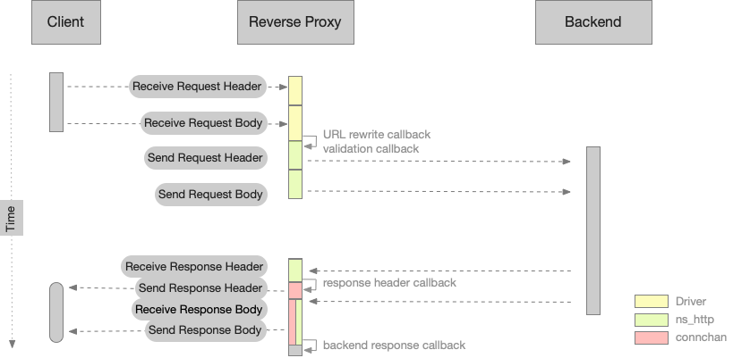

NaviServer Module – 5.0.4
revproxy - Reverse Proxy Module for NaviServer (Version 0.23)
The revproxy module implements a reverse proxy for NaviServer. It accepts external HTTP(S) requests and forwards them to one or more internal backend servers, shielding those servers from direct external access. The module also supports proxying of (secure) WebSocket connections.
Use the revproxy module to route requests by HTTP method and URL pattern to create hybrid deployments: serve some paths directly from NaviServer and delegate others to external services. For fine-grained control - such as allowing only authenticated users to reach certain backends you can invoke revproxy::upstream directly in server-side code (for example, in OpenACS .vuh pages).
NaviServer lets you specify when in the request lifecycle the proxy runs, and how it connects to each backend.
When: Determine at which point in the pipeline requests are proxied:
Filter (ns_register_filter): Executes early, before most other processing. Ideal if you need to forward unauthenticated or pre-authentication traffic to a backend that performs its own access control.
Request handler (ns_register_proc): Runs after filters (e.g., post-authentication). Behaves like any other static or dynamic handler, matching method, path, and resource name. For example, you might forward all ".php" requests to a dedicated PHP backend.
Direct invocation: Call revproxy::upstream programmatically in your Tcl code for conditional or on-demand proxying.
How: Choose one of three backend connection methods to balance streaming capability, performance, and observability. The default is recommended for most use cases. See Backend Connection Methods for details.
The reverse proxy module is configured by extending your standard NaviServer configuration file. In the "per-backend" style, each backend is defined in its own ns_section. It is also possible to register the calls via ns_registerproc and ns_registerfilter by calling directly in the "ns_param register" section the API revproxy::upstream.
To define sections per backend:
Load the revproxy module
Define backend sections (e.g., "backend1", "backend2")
Optionally override timeouts, callbacks, and connection methods per backend
First, load the revproxy module in your server’s "modules" section:
ns_section "ns/server/$server/modules" {
ns_param revproxy tcl
}
Next, set any global defaults for all backends. Here we define the verbosity and the "backendconnection" type. The latter can be defined for individual backends.
ns_section ns/server/$server/module/revproxy {
#ns_param verbose 1
#
# Register extra handlers or filters. The following command
# registgered a handler for /nsstats.tcl to obtain stats from the
# reverse proxy itself, when this URL is used. This assumes,
# that nsstats.{tcl,adp} has been installed into the pages
# directory of the proxy.
ns_param register {
ns_register_tcl GET /nsstats.tcl
}
}
Each backend requires its own ns_section under the server’s revproxy module. The parameters, which can be set per backend are the same as those, which can be set via the API Options.
In the first example, "backend1" forwards "/api/*" over HTTPS with custom timeouts, and uses the target’s Host header on POST:
ns_section ns/server/$server/module/revproxy/backend1 {
# Required: the upstream URL (or list of URLs)
ns_param target https://server1.local:8080/
# Optional: override defaults for various timeouts
ns_param connecttimeout 2s ;# default: 1s
ns_param receivetimeout 15s ;# default: 10s
ns_param sendtimeout 15s ;# default: 10s
# Define which paths map to this backend
ns_param map "GET /api/*"
ns_param map "POST /api/* {-use_target_host_header true}"
}
In this next snippet, "backend2" serves static files over plain HTTP and uses shorter timeouts; it only accepts GET or HEAD:
ns_section ns/server/$server/module/revproxy/backend2 {
ns_param target http://server2.local/
ns_param connecttimeout 1s
ns_param receivetimeout 1s
# Define which paths map to this backend
ns_param map "GET /static/*"
ns_param map "HEAD /static/*"
}
The third backend forwards requests via HTTPS via a "preauth" filter after removing the prefix "/shiny" from the URL.
ns_section ns/server/$server/module/revproxy/backend3 {
ns_param target https://server3.local/
ns_param backendconnection preauth
ns_param regsubs {{/shiny ""}}
ns_param map "GET /shiny/*"
ns_param map "POST /shiny/*"
}
You can make forwarding conditional on headers or client IP using Context Constraints. The example below only forwards "*.php" URLs when the incoming request has an "X-User" header matching "*admin*":
ns_section ns/server/$server/module/revproxy/backend4 {
ns_param target https://server4.local/
ns_param constraints {X-User *admin*}
ns_param map "GET /*.php"
ns_param map "POST /*.php"
}
Conjunctive (AND combined) context constraints can be defined by specifying multiple key/value pairs as a parameter value. When multiple separate constraints parameters are set in a section, these are taken as a disjunction (combined with OR). Technically this means, that the pattern is registered multiple times, each time with a different constraints value.
Example with conjunctive context constraints:
...
# AND: both constraints must match for all mapped patterns
ns_param constraints {X-Foo A X-Bar B}
ns_param map "GET /foo/*"
ns_param map "POST /foo/*"
...
Example with disjunctive context constraints:
...
# OR: either header matches
ns_param constraints {X-Foo A}
ns_param constraints {X-Bar B}
ns_param map "GET /foo/*"
ns_param map "POST /foo/*"
...
You can also attach constraints directly to individual map entries, keeping other maps unconstrained:
...
# GET is not constraint
ns_param map "GET /qux/*"
# DELETE is (has to come form the given IP range)
ns_param map "DELETE /qux/* {-constraints {x-ns-ip 10.0.0.0/8}}"
...
You can also register revproxy backends directly from Tcl rather than in separate sections. For example, this snippet distributes GET "/doc/*" requests round-robin between two backends, with a 20 s connect timeout:
ns_section ns/server/default/module/revproxy {
set target {http://srv1.local:8080/ http://srv2.local:8080/}
ns_param register [subst {
ns_register_proc GET /doc {
::revproxy::upstream proc -connecttimeout 20s -target [list ${target}]
}
}]
}
This setup uses simple load distribution across multiple backends (round-robin). Failover checks (health checks) for the backends are currently not performed.
The revproxy module supports three backend connection methods:
ns_connchan (Tcl-based)
Fully event-driven, suitable for streaming HTML and WebSockets
Supports background operation (does not block connection threads)
Proven stability and robustness
May be required for requests that cannot currently be handled by ns_http (e.g., certain WebSocket upgrade requests)
No persistent connections supported
Partial reads/writes and error handling in Tcl (more complex)
ns_http (C-based)
Efficient partial reads/writes in C
Supports persistent connections (NaviServer 5.0+) for repeated requests
Integrates with (multiple) task threads, scaling well under heavy load
Provides separate logging and statistics for backend connections
For certain types of requests (e.g., the websocket upgrade request), automatic fall back to ns_connchan possible.
Not optimal for streaming, since data arrives after full request has finished.
ns_http+ns_connchan (Combined Implementation, default)
Uses ns_http to send request data and ns_connchan to spool responses
Supports persistent connections and streaming
Supports background operation (non‐blocking)
You can set the default connection method globally via the configuration file, and override it per backend via the backendconnection parameter
Figure 1 shows the interaction between a client, the reverse proxy server and the backend server, when the backendconnection is set to ns_http+ns_connchan. The incoming request is always processed by the network driver of NaviServer (nssock or nsssl). After the request is processed, we have the request header in the form of an ns_set and the request body either as spool file or as string. At this time, the URL rewrite callbacj and later the validation callback is fired (see Advanced Customization via API) for more details). The chosen backendconnection defines then, how the request is sent to the backend, and how the results are received and delivered to the client. In the case of ns_http+ns_connchan, the response headers from the backend server are sent the client before the response body is received. Also, the response body is forwarded to the client incrementally.

Figure 1: Reverse Proxy Server with configuration ns_http+ns_connchan
When the backendconnection is ns_http, forwarding to the client happens after the full request has been received by the reverse proxy. When ns_connchan is used, the transfer is also incrementally, but with the drawbacks mentioned above.
The core command for proxying is revproxy::upstream, which accepts:
This command defines the proxying semantics. It can be registered as a request handler, as a filter, or it can be called programmatically whenever needed. When registered as a filter, the parameter when is automatically added upon invocation. When registered as a request handler proc, provide constant "proc" as first argument.
To use HTTP or HTTPS in backend connections, ensure the appropriate drivers (nssock for HTTP, nsssl for HTTPS) are loaded. Loading the network drivers entails listening on a port. If you wish to disable a particular listening port (e.g., HTTPS) while still using HTTPS for backend requests, configure the network driverf to listen on port 0:
ns_section ns/modules {
ns_param http nssock
ns_param https nsssl
}
ns_section ns/module/https {
ns_param port 0 ;# disable direct HTTPS listening if desired
}
Below is a sample configuration file illustrating a possible reverse proxy setup. Save this file (e.g., "/usr/local/ns/conf/nsd-config-revproxy.tcl") and start NaviServer with the appropriate shell/environment variables:
########################################################################
# Sample configuration file for NaviServer with reverse proxy setup.
########################################################################
set home [file dirname [file dirname [info nameofexecutable]]]
########################################################################
# Per default, the reverse proxy server uses the following
# configuration variables. Their values can be overloaded on startup
# via environment variables with the "nsd_" prefix, when starting the
# server, e.g., setting a different "revproxy_target" via:
#
# nsd_revproxy_target=https://localhost:8445 /usr/local/ns/bin/nsd -f ...
#
########################################################################
dict set defaultConfig httpport 48000
dict set defaultConfig httpsport 48443
dict set defaultConfig revproxy_target http://127.0.0.1:8080
dict set defaultConfig revproxy_backendconnection ns_http+ns_connchan
dict set defaultConfig address 0.0.0.0
ns_configure_variables "nsd_" $defaultConfig
ns_section ns/parameters {
ns_param home $home
ns_param tcllibrary tcl
#ns_param systemlog nsd.log
}
ns_section ns/servers {
ns_param default "Reverse proxy"
}
ns_section ns/modules {
if {$httpsport ne ""} { ns_param https nsssl }
if {$httpport ne ""} { ns_param http nssock }
}
ns_section ns/module/http {
ns_param port $httpport
ns_param address $address
ns_param maxupload 1MB
ns_param writerthreads 1
}
ns_section ns/module/https {
ns_param port $httpsport
ns_param address $address
ns_param maxupload 1MB
ns_param writerthreads 1
ns_param ciphers "ECDH+AESGCM:DH+AESGCM:ECDH+AES256:DH+AES256:ECDH+AES128:DH+AES:ECDH+3DES:DH+3DES:RSA+AESGCM:RSA+AES:RSA+3DES:!aNULL:!MD5:!RC4"
ns_param protocols "!SSLv2:!SSLv3"
ns_param certificate /usr/local/ns/etc/server.pem
}
ns_section ns/module/http/servers {
ns_param defaultserver default
ns_param default localhost
ns_param default [ns_info hostname]
}
ns_section ns/module/https/servers {
ns_param defaultserver default
ns_param default [ns_info hostname]
ns_param default localhost
}
########################################################################
# Settings for the "default" server
########################################################################
ns_section ns/server/default {
ns_param connsperthread 1000
ns_param minthreads 5
ns_param maxthreads 100
ns_param maxconnections 100
ns_param rejectoverrun true
}
ns_section ns/server/default/fastpath {
#
# From where to serve pages that are not proxied to a backend.
#
ns_param pagedir pages-revproxy
}
ns_section ns/server/default/modules {
ns_param nslog nslog
ns_param revproxy tcl
}
ns_section ns/server/default/module/revproxy {
ns_param backendconnection $revproxy_backendconnection
ns_param verbose 1
ns_param register {
ns_register_tcl GET /nsstats.tcl
}
}
ns_section ns/server/default/module/revproxy/backend1 {
ns_param target $revproxy_target
ns_param map "GET /*"
ns_param map "POST /*"
}
ns_section ns/server/default/httpclient {
#
# Activate persistent connections for ns_http and request logging (with connection reuse statistics)
#
ns_param keepalive 5s
ns_param logging on
ns_param logfile httpclient-revproxy.log
}
set ::env(RANDFILE) $home/.rnd
set ::env(HOME) $home
set ::env(LANG) en_US.UTF-8
Invoke NaviServer with this configuration file, for example:
nsd_revproxy_target=https://localhost:8445 \
nsd_httpport=48000 \
/usr/local/ns/bin/nsd -f -u nsadmin -g nsadmin -t /usr/local/ns/conf/nsd-config-revproxy.tcl 2>&1
In general, there are many way how to use the revproxy framework. The following examples shows, how to define a virtual server accepting requests with the host header field cvs.local (e.g., add this domain name as alias to your host and use the name in the URL). By defining the reverse proxy as a virtual server, one can specify different resource limits (number of connection threads, upload limits), different log files, different backend connection methods, etc.
Add this snippet to your NaviServer configuration and adjust the URLs/ports/names according to your needs. As it is, it will use the reverse proxy for HTTP/HTTPS requests addressed to cvs.local to the backend server 127.0.0.1:8060.
########################################################################
# Virtual Server definition for e.g. handling CVS browser
########################################################################
ns_section ns/servers {
ns_param cvs "Reverse proxy to CVS repository"
}
ns_section ns/module/http/servers {
ns_param cvs cvs.local
}
ns_section ns/module/https/servers {
ns_param cvs cvs.local
}
ns_section ns/server/cvs/httpclient {
ns_param keepalive 5s ;# default: 0s
}
ns_section ns/server/cvs/modules {
ns_param revproxy tcl
}
ns_section "ns/server/cvs/module/revproxy" {
ns_param backendconnection $revproxy_backendconnection
ns_param verbose 0
}
ns_section ns/server/cvs/module/revproxy/backend1 {
ns_param target http://127.0.0.1:8060/
ns_param map "GET /*"
ns_param map "POST /*"
}
}
There are many configuration options possible combining the functionality of a reverse proxy with an application server and a traditional WEB server. One could make the default server the reverse proxy, and use other servers for other purposes. One could also combine mass virtual hosting with the reverse proxy by defining appropriate mapping rules.
nsf (Next Scripting Framework, http://next-scripting.org/)